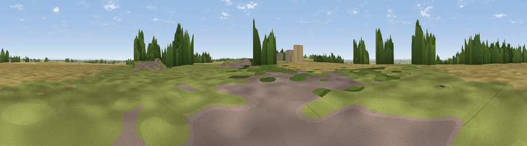

Viewpoint near Wellingore
#27720 in England · top 35% of its area beats it · near WellingoreThe view, rendered

A 360° render of this exact spot computed from the terrain model, tree cover and land cover — summer colours, afternoon light, calibrated against photographs of famous viewpoints. Real trees, hedges and buildings will differ in detail.
The panorama
Grey silhouette: terrain skyline in each direction (720 bearings, Earth curvature and refraction included). Dashed green: skyline with trees (+15 m) and buildings (+8 m) as obstacles. Blue strip: how far the ground is visible on each bearing.
Where the view opens
Wedge length = distance to the farthest visible ground on that bearing (vegetation-aware). Rings at 10, 25 and 50 km.
What fills the view
65% cropland · 21% grassland · 9% woodland · 5% built-up
Angular shares of the visible panorama (visual magnitude), not map area. Landscape diversity 0.43 (0–1 Shannon).
Key numbers
More beautiful places nearby
The staircase of upgrades: each row has a higher view potential than everything closer. Driving times are estimates from straight-line distance, calibrated against real road routing — check an actual route before setting out.
| Place | Direction | Drive | Score |
|---|---|---|---|
| Viewpoint near Wellingore | NNW · 2 km | ~5 min | 52.5 |
| Lincoln Castle | N · 17 km | ~29 min | 54.5 |
| Viewpoint near Great Gonerby | SSW · 18 km | ~31 min | 62.0 |
| Viewpoint near Belvoir | SW · 27 km | ~43 min | 70.8 |
| Viewpoint near Claxby | NNE · 42 km | ~62 min | 71.5 |
| Viewpoint near Woodhouse Eaves | SW · 62 km | ~85 min | 77.7 |
| Viewpoint near Mow Cop | W · 112 km | ~137 min | 78.9 |
| Viewpoint near Mow Cop | W · 112 km | ~137 min | 80.2 |
53.08320, -0.53193 · source: osm peak · position refined by local search. Computed location — check access rights before visiting.